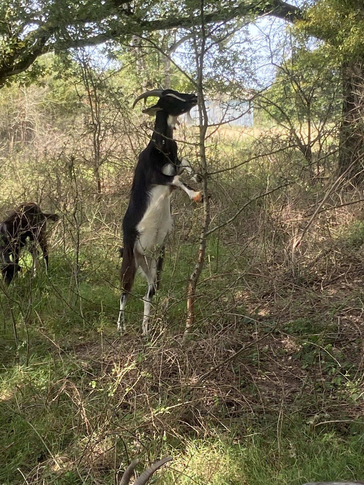
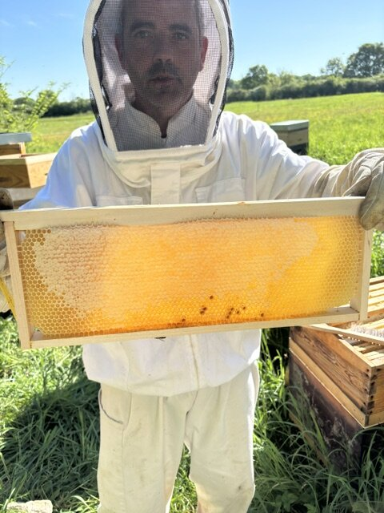
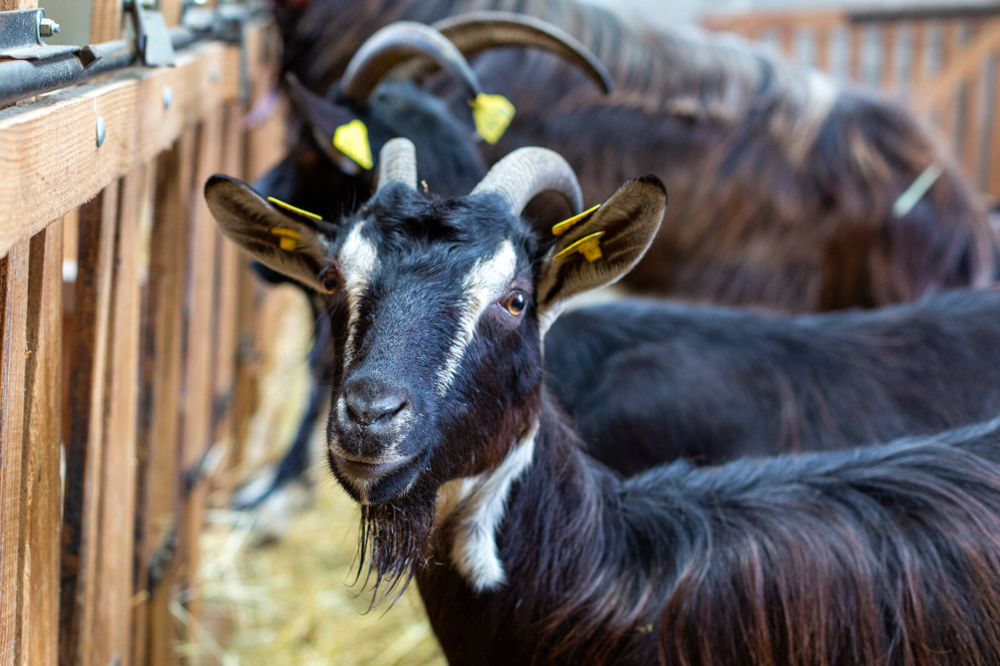
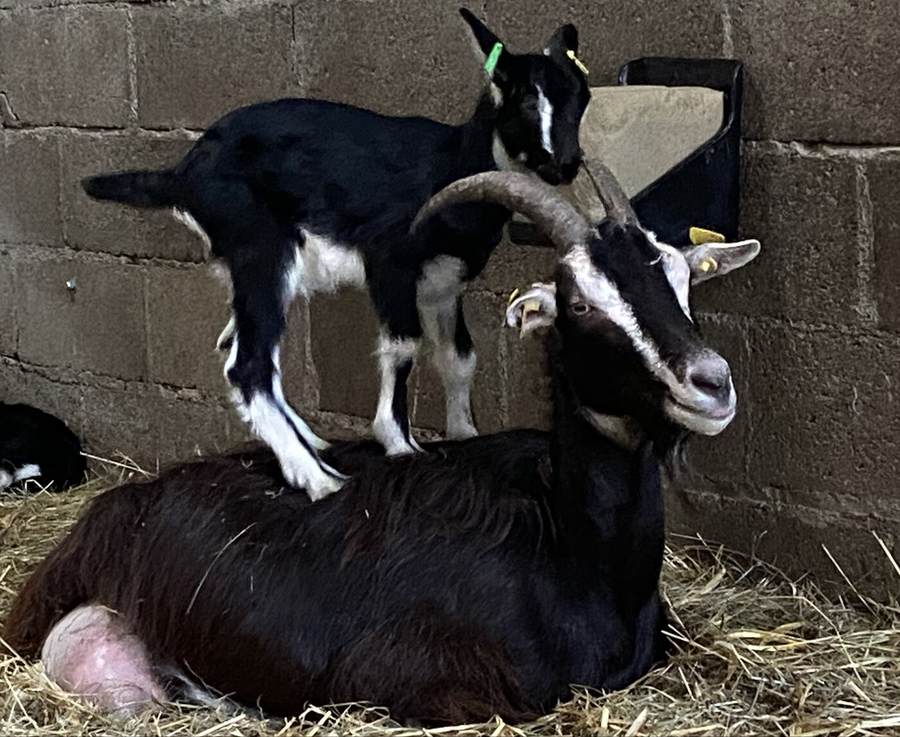
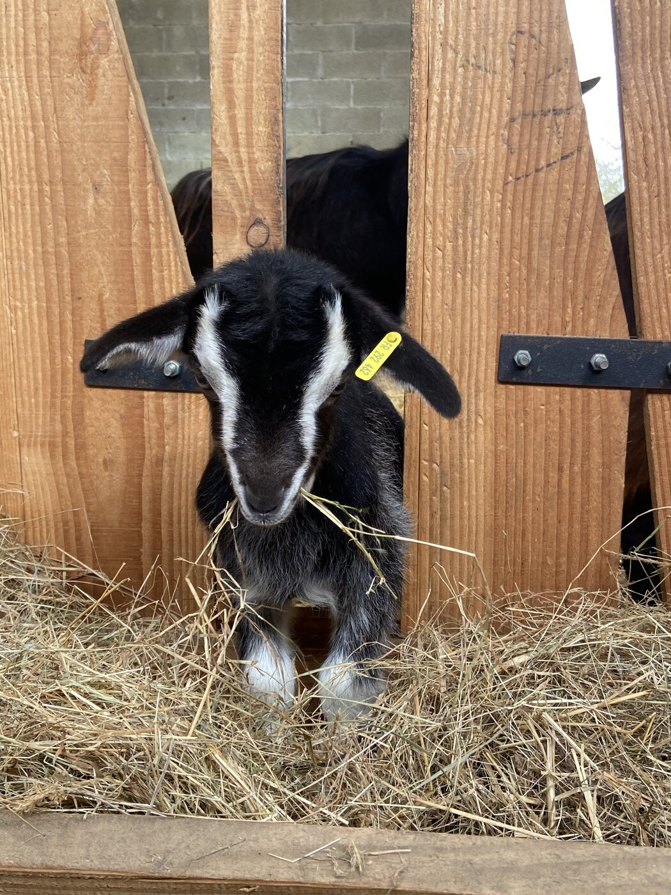
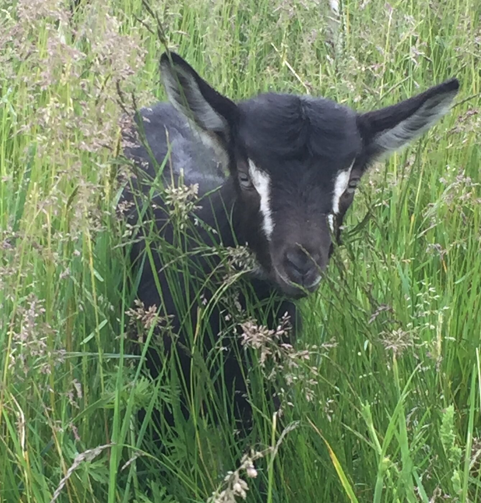

Accueil / Élevage & rucher

À la Piloterie, une cinquantaine de chèvres de race poitevine — une race caprine ancienne et aujourd'hui menacée — vivent en plein air toute l'année, au fil des prairies et des saisons.
Nous sommes adhérents de l'Association pour la Défense et le Développement de la Chèvre Poitevine (ADDCP), qui œuvre à la sauvegarde de cette race.

Le lait des chèvres est transformé sur place, dans notre petit atelier de fromagerie, selon des méthodes fermières et artisanales, en fromages au lait cru.
Nous respectons les saisons : la chèvre est un animal saisonné, les mises bas ont lieu au printemps. Nous avons donc du lait, et fabriquons nos fromages, de mars à fin octobre.
La traite est réalisée deux fois par jour de mars à juillet, puis une fois par jour d'août à octobre. La chèvre poitevine a la particularité de produire un lait étonnamment doux.
Voir les fromagesQuelques ruches sont installées dans les prairies de la ferme. Le miel et les produits de la ruche qui en sont issus sont récoltés et conditionnés directement sur place par Stéphane.
[À compléter : nombre de ruches, variétés de fleurs butinées, période de récolte, type de miel proposé (toutes fleurs, miellat...).]
Découvrir le miel & les produits de la ruche
De la visite des cadres à l'extraction, découvrez en images le travail de Stéphane auprès des abeilles de la ferme.




Des visites de l'exploitation sont possibles sur rendez-vous.